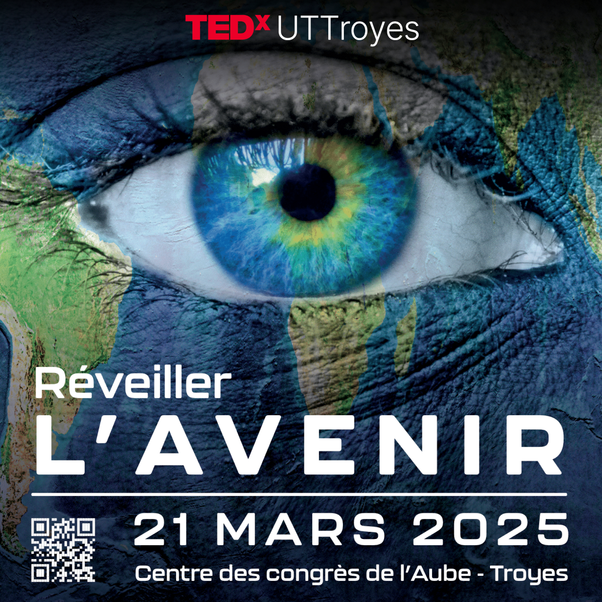
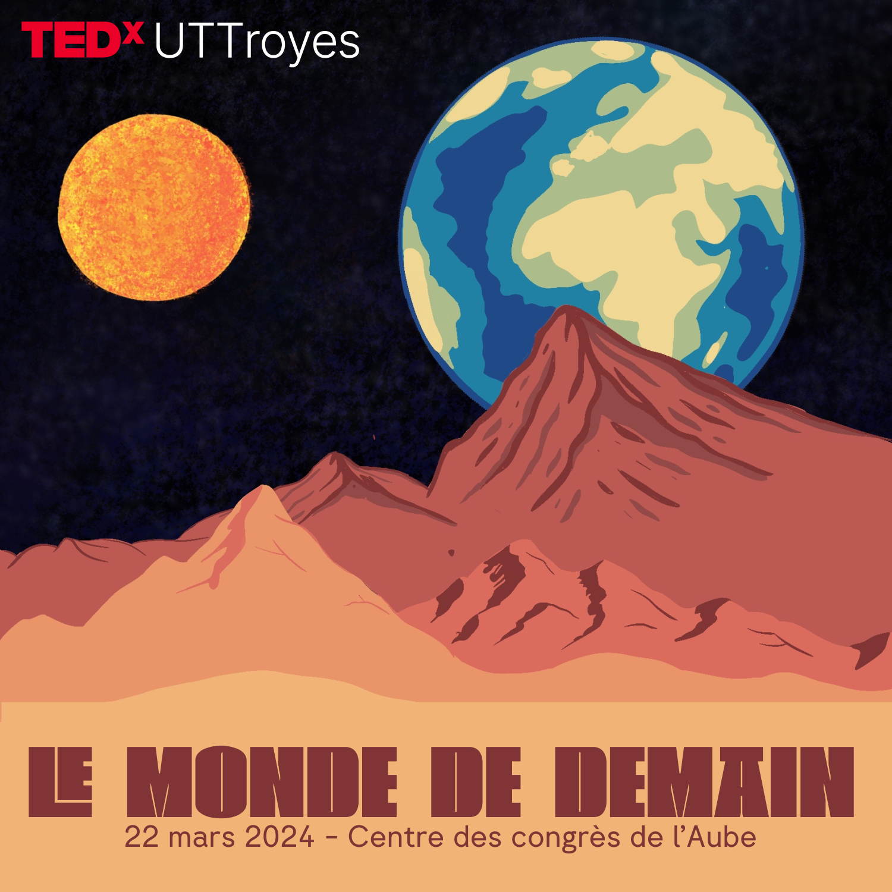
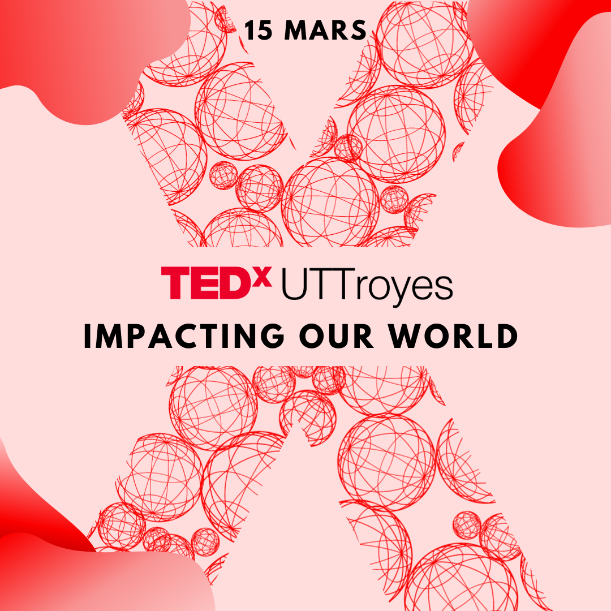
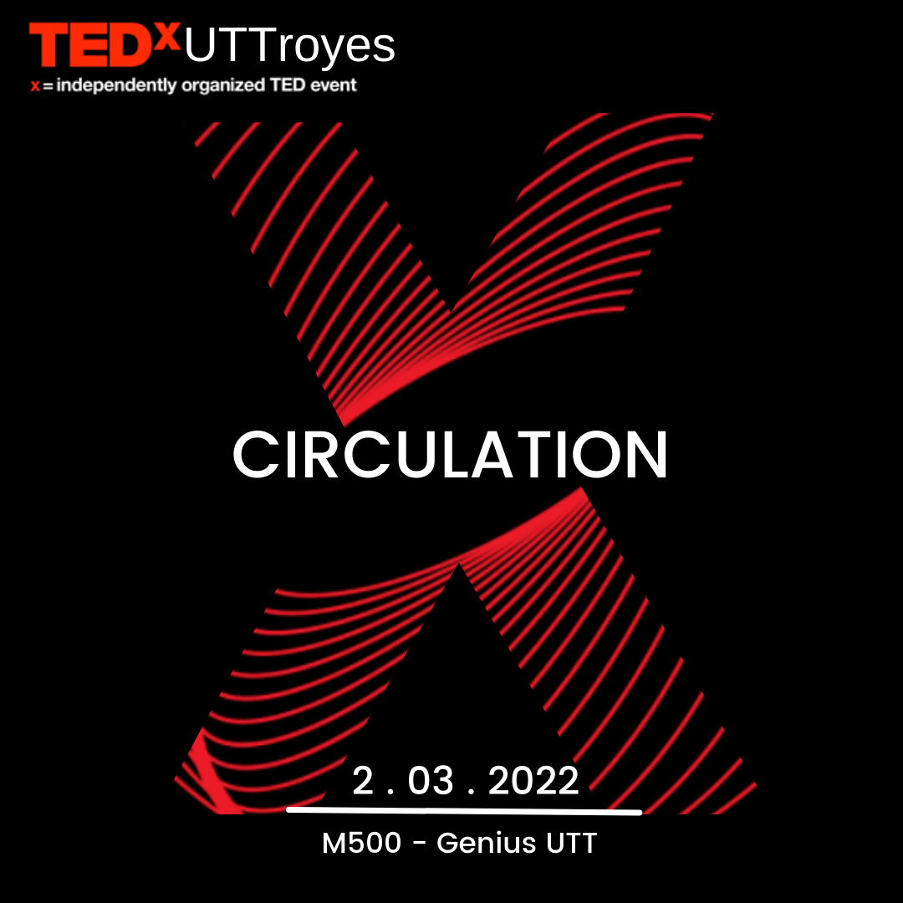
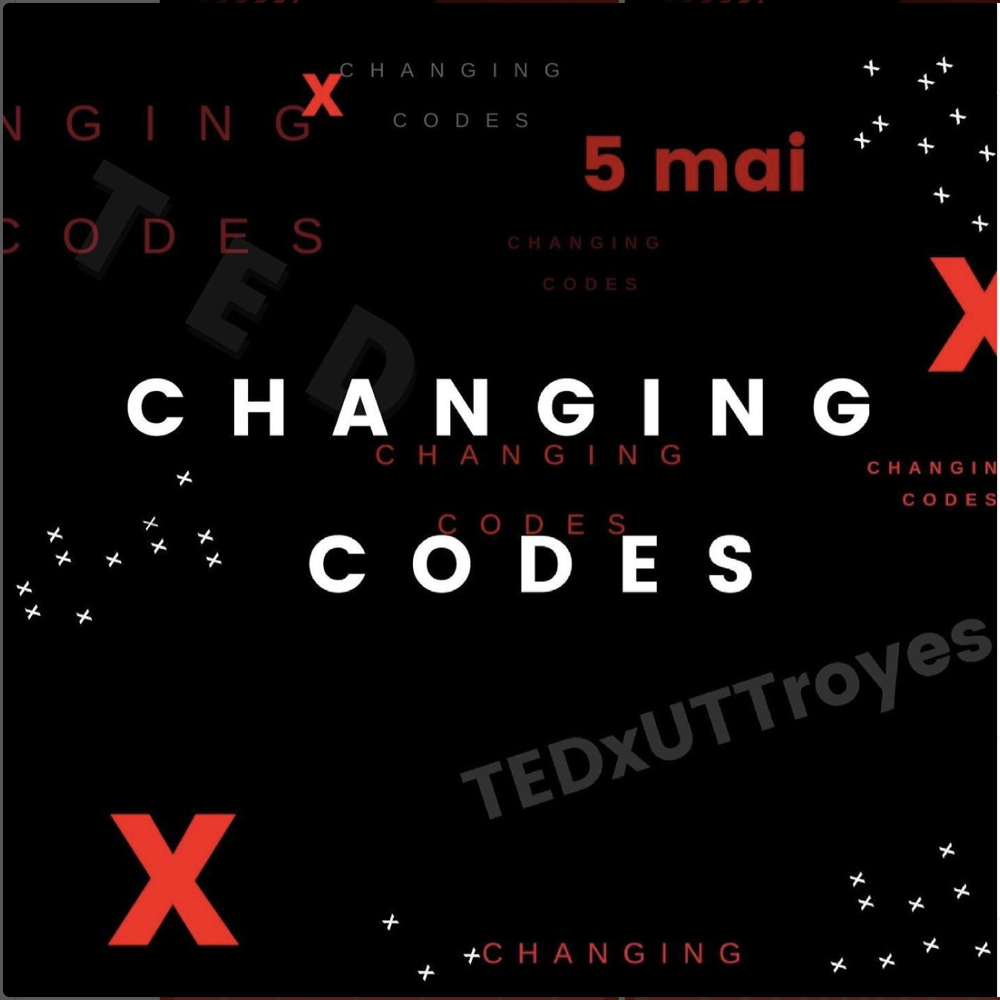

TOUTES LES EDITIONS
TEDxUTTroyes


édition 2025
Réveiller l'avenir
Après un premier changement de lieu l'année dernière, le TEDxUTTroyes revient au Centre de Congrès de l'Aube ! Rendez-vous le 21 mars 2025.
En savoir plus

édition 2024
Le monde de demain
Pour la première fois, le TEDxUTTroyes change de lieu pour voir les choses en grand en changeant de lieu au Centre de Congrès de l'Aube.
En savoir plus

édition 2023
Impacting our world
6 speakers d'exception ont eu l'occasion de donner leur vision autour du thème "Impacting our world".
En savoir plus

édition 2022
Circulation
Le 2 mars 2022, pour le grand retour du TEDxUTTroyes en présentiel, 7 speakers ont pu échanger autour du thème "Circulation".
En savoir plus

édition 2021
Changing codes
Pour sa première édition post-covid, le TEDxUTTroyes a réuni sept speakers pour échanger sur le thème "Changing codes".
En savoir plus

édition 2019
Thinking outside the box
Pour la première fois, le TEDxUTTroyes s'est tenu au printemps. Un édition qui a rassemblé sept speakers autour du thème : "Thinking outside the box".
En savoir plus

édition 2017
To the Limits and Beyond
Pour la deuxième édition du TEDxUTTroyes, sept speakers sont venus partager leurs connaissance et leur vision du thème "To the limits and beyond".
En savoir plus

édition 2016
Shape the futur
Redécouvrez la première édition du TEDxUTTroyes. Sept speakers ont relevé le défi de donner un talk de 18 minutes sur le thème "Shape the future".
En savoir plus